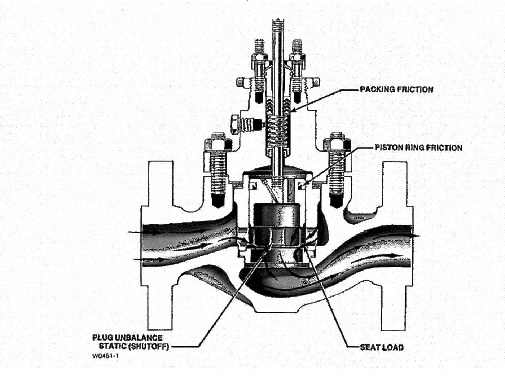

ch3-m1: force table (CVH 5.11.1) + Fisher force-source section (D750020 W0451-1)
Valve Forces
| Force | Where it acts | Set by |
|---|---|---|
| A · Static unbalance | Valve plug face | process ΔP × net unbalance area — large on unbalanced plugs, small on balanced |
| B · Seat load | Plug-to-seat contact line | the ANSI/FCI shutoff class wanted (lb per lineal inch of port) |
| C · Packing friction | Stem, in the packing box | stem size, packing type, and packing compression |
| D · Additional forces | Piston-ring seals, bellows, soft seats | construction — e.g. piston-ring friction on balanced trim |
